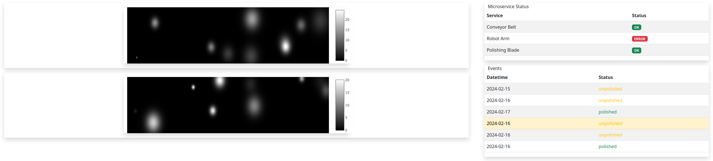

Tutorial
In this ~30 minutes tutorial, we will create a Single Page Application (SPA). It is a web frontend for an (imaginary) industrial machine learning application.
All widget’s are initially created using generative AI.
Next we will describe in detail our imaginative/mock industrial production line system. If you are extremely impatient, you might want to hop directory into creating the code.
The main purpose of this mock web-frontend excercise is to demonstrate the various interactions and global state mess that can arise even in a simple web UI case and how it can be easily solved with CuteFront.
You can also try it on-line in here
The production line features:
Thin sheets of some Very Expensive Material that move on a conveyor belt and which are inspected by machine vision
The Very Expensive Material sheets have bumps that must be polished away
Samples are picked up by a robotic arm and polished using a blade
The SPA features:
A widget (1) showing the status of the production line (statuses of conveyor belt, robotic arm and the polishing blade)
2D height profile widgets (2) of sheets of the Very Expensive Sample Material
A list widget (3) of past, inspected height profiles. Each list item includes timestamp and a sample status (polished or not)
SPA interactions are:
There are two height profile widgets. The first height profile is always updated to the latest data received from the production line
The second height profile corresponds to the sample user has clicked in the list of past height profiles
When user clicks on a height profile (either first or second one), the corresponding list item is chosen in the list
When user clicks on a list item, the second height profile shows the corresponding height profile
Each list item / sheet of Very Expensive Material has a sample status (polished or not) that is updated some time in the future (when the blade has polished the sample succesfully)
As we can see, even in this very simple mock application, there starts to be quite some amount of interactions in the SPA that can easily create a global state mess.
When developing systematically with CuteFront, these are the steps you will do
Identify all the widgets that you need. In our case there are four of them: (1) StatusWidget, (2) ProfileWidget, (3) SampleListWidget and (4) SampleItemWidget (that are instantiated as child widgets of SampleListWidget).
All widgets will be reusable for other projects / extending the system in the future.
Map all SPA interactions into signals and slots -> now you know the signals and slots required by your widgets. This is where most of the brain work goes into.
Start creating widgets. This is where the AI LLM assistants come into play.
Create main html file where you connect all widgets with signals and slots.
Even though coding in the CuteFront way, makes the (complex) application interactions very tractable, it is a good practice to additionally write the widgets and their signals and slots into a diagram, where one can see the whole situation at a glance. There is one at the end of this section.
Note
So no more of those un-reusable/un-maintained Vue.js apps that make weird/crazy stuff when clicking on an item and nobody knows / remembers why!
1. Create Directory Structure
Create a directory for your project and enter it:
mkdir my_cute_app
cd my_cute_app
Execute project init script directly from github in your project directory:
bash <(curl -sSL https://raw.githubusercontent.com/elsampsa/cutefront/main/script/project_init.bash)
Let’s use app3 as the app subdirectory name.
Now you have the necessary directory structure and the widget base library (for more details, see code organization):
my_cute_app
├── app3 # your app's .js and .html files
├── app3.html # your frontend entry-point
├── assets # images, etc.
├── css # your app's css
└── lib # *** The CuteFront Widget Library ***
├── base # *** AS A GIT SUBMODULE ***
└── bootstrap-5.2.3-dist
├── css
└── js
2. Create Widgets using AI
Next we will use ChatGPT, to generate the various widgets used in our SPA.
Start your ChatGPT session, by feeding it the preconditioning prompt. After that, it is ready for your service.
You can consider the prompts used in generating the widgets as detailed definitions / declarations of your software components.
For example, consider writing them as clean markup (.md) documents that you can then include into the directory accompanying the code. Or include them into a wiki page.
Warning
ChatGPT is prone to make some minor mistakes, forget things or writing things almost in the correct/optimal way but not quite. So you need to know what you are doing and actually understand what CuteFront is about. Working with ChatGPT is a conversational and iterative process. Corrected and iterated files are provided in this example.
A. Status Panel Widget
statuspanel.js and statuspanel.html. Try on-line here
Create the first widget with this prompt:
Please create a widget class "StatusPanel" showing the status of various microservices.
The widget should use an existing <table> element of class "table" of the html file.
The header of the table should have columns "Service" and "Status".
Each row of the table corresponds to a different service and it's status.
The services are: "Conveyor Belt", "Robot Arm", "Polishing Blade".
Status should be shown with boostrap's "badge" css class.
There are three possible statuses for each service: "ok", "error" and "n/a".
"ok" should be shown with boostrap's "bg-success" class, "error" with bootstrap's "bg-danger" class, while "n/a" should show in "bg-secondary" class.
The widget should have the following slots for setting each service's status:
- belt_status_slot(status)
- arm_status_slot(status)
- blade_status_slot(status)
Parameter status is a string that is either "ok", "error" and "n/a".
In the test html, provide test buttons that can be used to set each service's status to any of the three statuses.
The more explicit you are, the better, of course. Also basic knowledge of bootstrap styling and any other javascript/css library you are using is a must (for that, please see the links section).
Put the resulting statuspanel.js and statuspanel.html into the app3/ directory.
Now we’d like to see the newly created widget and test it’s basic functionality, so launch the chrome browser in a special permitive file access mode:
cd app3
google-chrome --allow-file-access-from-files .
Enable from the menus More tools -> Developer Tools.
Choose statuspanel.html. Now you can see and test the new widget.
Sometimes ChatGPT forgots to initialize a variable, assign unique UUIDs
to html elements created dynamically in createState, not using the _slot functions adequately in the html part
of the code, etc. small bugs, but after drawing it’s attention to these problems, it fixes them allright.
Once you have iterated with ChatGPT and tested the correct functionality of statuspanel.html, the final thing you should do,
is to put in-place correct docstrings, as instructed in here.
Warning
when launching google-chrome with the aforementioned permitive file access, be sure not to browse the internet, as the browser has unlimited access to your file system. You can achieve the same file access also in Firefox with the “plainfile” development environment.
B. Profile Widget
profile.js and profile.html. Try on-line here
Please create a widget class "ProfileWidget", showing a 2D grayscale heatmap with size of x=800px and y=200px.
The widget should use an existing <div> element of the html file.
Widget modifies the <div> element's (bootstrap) class attributes so that it has "row" and "m-3" attributes and a shadow.
Please add also some nice class attribute that centers and maximizes the heatmap size.
Widget's slots:
sample_slot(data)
- data format: {
uuid: uuid string
data: 2D array with dimensions x=500, y=100 at range (0,255)
}
- updates heatmap data
- caches uuid as a state variable
- if data.uuid and data.data are null, then the widget state and heatmap is initialized
Widget's signals:
clicked
- emitted when user clicks the heatmap
- carries the uuid state variable
Please use plotly for the heatmap visualization.
The widget's state is initialized to both uuid and heatmap to null.
When uuid is null, there should be no heatmap visible, but just an empty html element with the dimensions of (800, 200).
In the test html there should be two buttons: (1) clear (that initializes wdget's state) and (2) send (sends a random heatmap)
C. SampleListWidget and SampleListItemWidget
samplelist.js and samplelist.html. Try on-line here
Please create two widget classes into the same file.
The classes are "SampleListWidget" and it's child widget "SampleItemWidget".
## SampleListWidget
SampleListWidget implements a tabulated list of samples.
Each row corresponds to a separate SampleItemWidget.
SampleListWidget should use an existing <table> element of class "table" of the html file.
SampleListWidget's slots:
new_sample_slot(sample)
- sample object format : {
uuid: uuid string
datetime: datetime string
data: 2D array
}
- Emits signal new_sample with the sample data
- Creates a new SampleItemWidget with the data
choose_sample_slot(uuid)
- uuid: uuid string
- saves uuid as a state variable (say, this.current_uuid)
- highlights SampleItemWidget corresponding to the uuid in the list
sample_clicked_slot(uuid)
- uuid: uuid string
- receives a uuid from SampleItemWidget that has been clicked
- emit signal chosen_sample with sample object
polished_slot(uuid)
- uuid: uuid string
- calls SampleItemWidget's (that corresponds to the uuid) "polished_slot"
SampleListWidget should also have methods to remove all the child widgets
(i.e. to clear the list) and to remove a certain child widget corresponding
to a certain uuid.
SampleListWidget's signals:
new_sample
- carries a sample object (see new_sample_slot)
chosen_sample
- carries a sample object
### SampleItemWidget
SampleItemWidget is always initialized with a new immutable sample object at the constructor.
It also features an internal state variable "polished" that should be initialized to false.
Each SampleItemWidget corresponds to a row in the table of the parent widget.
Each row should indicate a datetime string and status "polished" / "unpolished"
"polished" should be shown with boostrap's "text-success" class, "unpolished" with bootstrap's "test-warning" class
The "polished" state variable should be only in the HTML DOM.
SampleItemWidget shall have method "getHTML()" that is used by its parent to get it's HTML
and attaching it to it's own DOM. If you have a better solution, be my guest!
SampleItemWidget has slot "polished()" that sets the internal state variable "polished" to true.
SampleItemWidget has a signal named "clicked" that carries it's uuid and which is connected to its parent widget.
In the test html, please initialize SampleListWidget with three uuid
test values 1,2 ja 3 (by calling it's new_sample_slot function)
Create also some buttons:
A button that sends a signal and mock data to SampleListWidget's "new_sample_slot"
(it can use random test uuid values > 3)
A button that sends a signal to choose_sample_slot (values between 1-3)
SampleListWidget's "new_sample" and "chosen_sample" signals should be connected
to functions that prints out the data object's uuid with a message starting with "new_sample:"
etc.
Please remember also to handle error cases for inexistent or non-initialized uuids, etc.
Thank you!
Put the resulting samplelist.js and samplelist.html into the app3/ directory, etc.
3. Create Main SPA HTML
By now you have iterated with ChatGPT and produced files that work correctly, testing them by loading the test html files in your browser, etc.
So you should have the following directories and files:
your-directory/
app3/ # the widgets we just created
profile.html
profile.js
statuspanel.html
statuspanel.js
samplelist.html
samplelist.js
app3.html # the main application html
assets/
css/
lib/
At this stage you might want to generate autodocumentation using the docstrings.
Next we create the main html entry point code for your app into app3.html. Let’s use our AI assistant for that as well:
Please create me an html file (app3.html) where we create a layout for placing all our widgets, instantiate
the widgets and connect their signals and slots together.
The app3.html is in directory "." and the widgets are in "./app3/" folder.
Here are the name of the widget instances and their classes (instance name, class name):
profile_latest = ProfileWidget
profile_chosen = ProfileWidget
status = StatusWidget
sample_list = SampleListWidget
I'd like to have roughly the following layout:
+-----------------+-----------------+
| profile_latest | status |
| | sample_list |
| profile_chosen | |
+-----------------+-----------------+
test button area
Connect the signals to slots like this:
profile_latest.signals.clicked -> sample_list.choose_sample_slot
profile_chosen.signals.clicked -> sample_list.choose_sample_slot
sample_list.signals.new_sample -> profile_latest.sample_slot
sample_list.signals.chosen_sample -> profile_chosen.sample_slot
In the test button area I want buttons that simulate signals sent to the system:
- buttons for setting each possible state of the status panel
- "send-new-sample" : sends a signal to sample_list's new_sample slot.
uuids can be integer numbers starting from 0 and incrementing by one at each new sample.
- "polish-sample" : sends a signal to sample_list's polished_slot.
the uuid can be the latest integer uuid sent with "send-new-sample" button
4. HIMO Diagram
For each Widget, IN lists the slots (and input/setter methods),
while UP lists all signals (and output/getter methods).
sample_data:
uuid (str)
datetime (str)
2D profile (2D array)
StatusWidget status : production line status
STATE:
- service status are encode into DOM HTML
IN:
- belt_status_slot(string: "ok", "error" or "n/a")
- arm_status_slot(string: "ok", "error" or "n/a")
- blade_status_slot(string: "ok", "error" or "n/a")
SampleListWidget sample_list : list of all arrived samples
STATE:
- List of current child widgets (can be encoded into the DOM HTML)
- Currently chosen/highlighted child widget (can be encoded into the DOM HTML)
UP:
- signal: new_sample(sample_data)
- connect to profile_latest:sample_slot(sample_data)
- signal: chosen_sample(sample_data)
- connect to profile_chose:sample_slot(sample_data)
IN:
- new_sample_slot(sample_data)
- add new SampleItemWidget child widget
- emit signal:new_sample(sample_data)
- choose_sample_slot(uuid) : from outside SampleListWidget
- choose which SampleItemWidget to highlight from the
child widgets
- sample_clicked_slot(uuid) : from child widgets
- choose which SampleItemWidget to highlight from the
child widgets
- emig signal:chosen_sample(sample_data)
- polished_slot(uuid) : from outside SampleListWidget
- indicates a sample uuid whose status should be updated
to "polished"
Child Widgets:
- SampleItemWidget(sample_data)
STATE:
- immutable variable: sample_data
- polished=false (can be encoded into the DOM HTML)
UP:
- signal: clicked(uuid)
- connect to parent widget sample_clicked_slot(uuid)
IN:
- polished_slot()
- indicates that this sample's status should be updated
to polished=true
- SampleItemWidget(sample_data)
...
- SampleItemWidget(sample_data)
...
...
ProfileWidget profile_latest (2D profile of latest sample)
STATE:
- uuid (uuid of the sample)
- 2D data (in plotly graphical element)
UP:
- signal: clicked(uuid)
- connect to sample_list:choose_sample_slot
IN:
- sample_slot(sample_data)
- visualize 2D sample data
ProfileWidget profile_chosen (2D profile of chosen sample)
(identical to profile_latest)